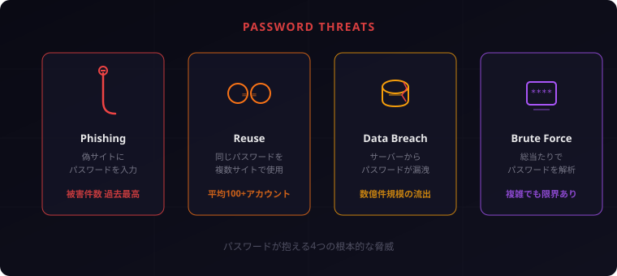
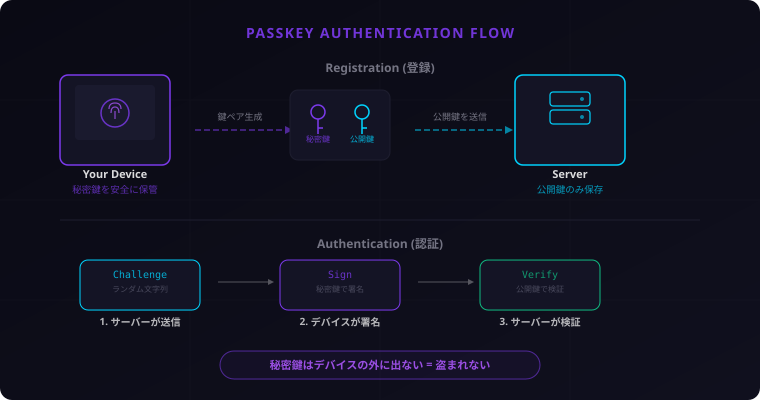
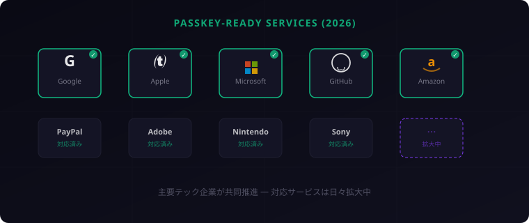

Aegis
Aegis
パスワードはもう古い？ パスキー完全ガイド ― 仕組み・設定方法・よくある疑問まとめ
まず守りを固めましょう。「パスワードを使い回している」「覚えきれないからメモに書いている」——そんな心当たりはありませんか？ パスワードの問題は決して他人事ではありません。今回は、パスワードに代わる新しい認証方式「パスキー」について、仕組みから設定方法、よくある疑問まで丁寧に解説します。
1. パスワードの限界
私たちは何十年もパスワードに頼ってきました。しかし、パスワードという仕組みは、もはや現代のセキュリティ脅威に対応しきれなくなっています。
フィッシング被害の深刻化
フィッシング攻撃は年々巧妙化しています。本物そっくりのログインページに誘導し、ユーザーにパスワードを入力させる。2024年にはフィッシング被害件数が過去最高を更新し、2025年もその勢いは衰えていません。どんなに注意深い人でも、完璧に見抜くのは困難な時代になりました。
パスワードの使い回し問題
「複雑なパスワードを、サービスごとに変えて、定期的に更新する」——これが理想だと言われ続けてきました。しかし現実には、人は平均して100以上のオンラインアカウントを持っています。すべてに異なる複雑なパスワードを設定し、記憶しておくのは非現実的です。
結果、多くの人が同じパスワードを使い回します。ひとつのサービスで漏洩したパスワードが、他のサービスへの不正ログインに使われる「クレデンシャルスタッフィング」は、攻撃者にとって最もコスパの良い手法のひとつです。
大規模情報漏洩の現実
2024年から2025年にかけて、大規模なデータ漏洩事件が相次ぎました。数億件規模のパスワードがダークウェブに流出し、誰でもアクセスできる状態になっています。「自分は大丈夫」と思っていても、利用しているサービスの側から漏れてしまえばどうしようもありません。
「複雑なパスワード」の限界
「大文字・小文字・数字・記号を含む12文字以上」——こうしたパスワードポリシーは、たしかにブルートフォース攻撃には強くなります。しかし、フィッシングには無力です。どんなに複雑なパスワードでも、本人がフィッシングサイトに入力してしまえば一瞬で盗まれます。パスワードの「複雑さ」では解決できない問題がある。これが、新しい認証方式が必要とされる根本的な理由です。

2. パスキーとは何か
パスキー（Passkey）は、パスワードに代わる新しい認証方式です。FIDO AllianceとW3Cが策定した国際標準規格に基づいており、Apple・Google・Microsoftの3社が共同で推進しています。
「鍵と錠前」で理解するパスキー
パスキーの仕組みは「鍵と錠前」にたとえるとわかりやすいでしょう。
パスキーを設定すると、あなたのデバイス上に「秘密鍵」（=鍵）が、サービス側に「公開鍵」（=錠前）がそれぞれ作られます。ログインするとき、サービス側は錠前を差し出し、あなたのデバイスが鍵で開けて見せる。この「鍵」はデバイスの外に出ることがないため、盗まれる心配がありません。
パスワード vs パスキー 比較表
| 項目 | パスワード | パスキー |
|---|---|---|
| 記憶が必要？ | はい（複雑な文字列を覚える） | いいえ（生体認証やPINで解錠） |
| フィッシング耐性 | なし（偽サイトに入力してしまう） | あり（オリジンにバインドされる） |
| サーバー漏洩時のリスク | 高い（パスワード自体が漏れる） | 低い（公開鍵のみ。悪用不可） |
| 使い回しの問題 | あり（同じPWを複数サイトで利用） | なし（サイトごとに固有の鍵ペア） |
| 認証の手間 | 入力が必要 | 指紋 / 顔認証 / PINのみ |
3. パスキーの仕組み
ここからは少し技術的な話になりますが、なるべく平易に説明します。仕組みを理解しておくと、「なぜパスキーが安全なのか」が腑に落ちるはずです。
FIDO2 / WebAuthn とは
パスキーはFIDO2とWebAuthnという2つの技術標準に基づいています。
- FIDO2: FIDO Alliance（Google、Apple、Microsoftなどが参加する業界団体）が策定した認証規格。パスワードレス認証の基盤
- WebAuthn: W3C（Web標準を策定する団体）が定めたWeb認証API。ブラウザからFIDO2認証を利用するための仕組み
この2つが組み合わさることで、Webブラウザ上でパスワードなしの安全な認証が実現しています。
登録フロー: 鍵ペアの生成
パスキーを初めて設定するとき、以下のことが起こります。
- サービス側が「パスキーを登録してください」とリクエストを送る
- あなたのデバイスが公開鍵と秘密鍵のペアを生成する
- 公開鍵だけがサービス側に送られ、保存される
- 秘密鍵はデバイス内の安全な領域（セキュアエンクレーブ/TPM）に保管される
ポイントは、秘密鍵がデバイスの外に出ないこと。サービス側に保存されるのは公開鍵のみです。公開鍵は文字通り「公開」しても問題ないデータであり、万が一サーバーから漏洩しても、それだけではログインできません。
認証フロー: チャレンジ署名
ログインするとき、以下のやりとりが行われます。
- サービス側がランダムな文字列（チャレンジ）を生成し、ブラウザに送る
- ブラウザがあなたに本人確認を求める（指紋認証 / 顔認証 / PIN入力）
- 本人確認が通ると、デバイス内の秘密鍵でチャレンジに電子署名する
- 署名されたデータがサービスに送り返される
- サービス側は保存してある公開鍵で署名を検証する
この一連のやりとりで、ネットワーク上を流れるのは「チャレンジ」と「署名」だけ。秘密鍵そのものは一切送信されません。
なぜフィッシングに強いのか: オリジンバインド
パスキーの最大の強みがオリジンバインドです。
パスキーの秘密鍵は、登録時のWebサイトのドメイン（オリジン）と紐づけられています。たとえば accounts.google.com で作ったパスキーは、accounts.google.com でしか使えません。
攻撃者が accounts-google.fake.com という偽サイトを作っても、ブラウザはドメインが一致しないことを自動的に検知し、パスキーを使った認証を拒否します。ユーザーが騙されてアクセスしても、技術的にパスキーが漏洩することはありません。
これはパスワードでは絶対に実現できないことです。パスワードは「ユーザーが入力する文字列」に過ぎないため、偽サイトでもそのまま入力できてしまいます。パスキーは認証処理がブラウザとOSのレベルで制御されるため、人間のミスに左右されないのです。

4. 設定してみよう
理屈はわかった。では実際にパスキーを設定してみましょう。ここでは主要3サービスでの手順を紹介します。
Google アカウント
- Google アカウントのパスキー設定ページにアクセス
- 「パスキーを作成する」をクリック
- ブラウザが本人確認を要求（指紋 / 顔認証 / PIN）
- 確認が完了すると、パスキーが登録される
次回のログインからは、パスワードの代わりに生体認証だけでサインインできます。
Apple ID
- Safari で Apple ID のサインインページにアクセス
- サインイン時に「パスキーで続ける」を選択
- Face ID / Touch ID で本人確認
- パスキーが iCloud キーチェーンに保存され、Apple デバイス間で自動同期
Apple エコシステムでは、iCloud キーチェーンを通じてすべてのデバイスでパスキーが共有されます。iPhone で作ったパスキーを Mac でそのまま使えるのは大きなメリットです。
Microsoft アカウント
- Microsoft アカウントのセキュリティ設定にアクセス
- 「サインイン方法の追加」から「顔、指紋、PIN、またはセキュリティキー」を選択
- 画面の指示に従って Windows Hello またはセキュリティキーで登録
- 登録完了後、パスワードなしでサインイン可能に
設定自体は驚くほど簡単です。ほとんどの場合、1〜2分で完了します。「セキュリティ対策は面倒」というイメージがあるかもしれませんが、パスキーに限って言えば、むしろパスワードを入力するより楽になります。まず一つのサービスから試してみてください。
5. よくある疑問 Q&A
Q. スマホを紛失したらどうなる？
パスキーはクラウド同期に対応しています。iCloud キーチェーン（Apple）、Google パスワードマネージャー（Android）、Windows Hello がそれぞれデバイス間の同期を担っています。スマホを紛失しても、同じアカウントでサインインした別のデバイスからパスキーを利用できます。
また、多くのサービスではパスキーと並行して従来の回復手段（回復用電話番号、回復コードなど）も維持されます。パスキーを設定したからといって、他のすべての手段が使えなくなるわけではありません。
Q. 複数デバイスで同期できる？
はい。Apple の iCloud キーチェーン、Google の Google パスワードマネージャーは、同じアカウントに紐づいたデバイス間でパスキーを自動同期します。iPhone で作ったパスキーが iPad や Mac でもすぐに使えます。
ただし、Apple と Android の間など、エコシステムをまたいだ同期には対応していません。その場合は、1Password や Dashlane などのクロスプラットフォーム対応パスワードマネージャーを使うことで、OS の壁を超えた同期が可能です。
Q. パスワードマネージャーとの違いは？
パスワードマネージャーは「複雑なパスワードを自動生成・保存してくれるツール」です。便利ですが、最終的にサービスに送られるのは依然として「パスワード」であり、フィッシングのリスクは残ります。
パスキーは認証の仕組みそのものが異なります。パスワードという概念自体を排除し、公開鍵暗号方式で認証するため、フィッシング耐性が根本的に違います。
なお、1Password や Dashlane などの主要パスワードマネージャーは、すでにパスキーの保存・管理にも対応しています。パスワードマネージャーとパスキーは対立するものではなく、補完関係にあります。
Q. 企業で導入するには？
企業のシステム管理者にとって、パスキー導入の主なポイントは以下の通りです。
- IdP（認証基盤）の対応確認: Microsoft Entra ID、Okta、Google Workspace などの主要 IdP はすでにパスキーに対応済み
- 段階的な導入: いきなりパスワードを廃止するのではなく、まずはパスキーを「追加の選択肢」として提供し、従業員の利用率を見ながら移行する
- デバイスポリシー: 会社支給端末 vs BYOD でパスキーの管理方針を決める
- 回復フローの設計: デバイス紛失時の対応フローを事前に整備しておく
Q. パスワードは完全になくなる？
短期的には、No です。パスキーに対応していないサービスはまだ多く、すべてのユーザーが対応デバイスを持っているわけでもありません。しばらくはパスワードとパスキーが共存する過渡期が続くでしょう。
しかし長期的には、パスワードの役割は確実に縮小していきます。Apple、Google、Microsoft が足並みを揃えてパスキーを推進している事実は、業界全体の方向性を示しています。
「パスワードがすぐになくなる」とは言いません。しかし、パスキーという選択肢がある以上、対応しているサービスから順に移行していくのが賢明です。完璧を待つ必要はありません。できるところから守りを固めていきましょう。
6. 現状と課題
対応サービスは着実に増加中
2026年4月現在、パスキーに対応している主要サービスは急速に増えています。
- Google: 全アカウントでパスキー対応済み。デフォルトの認証方式として推奨
- Apple: iOS / macOS でネイティブ対応。iCloud キーチェーンで同期
- Microsoft: Windows Hello と連携。Entra ID で企業向けにも展開
- GitHub: パスキーでのサインインに対応
- Amazon: ショッピングアカウントでパスキー利用可能
- PayPal / Adobe / Nintendo / Sony なども続々対応

残る課題
一方で、普及に向けた課題も存在します。
- 未対応サービス: 中小規模のWebサービスや、国内独自のサービスにはまだ対応していないものが多い
- 古いデバイス: セキュアエンクレーブやTPMを搭載していない古いスマートフォン・PCでは利用できない
- クロスプラットフォームの壁: Apple / Google / Microsoft のエコシステム間の同期は、まだサードパーティツール頼み
- ユーザー教育: 「パスキーって何？」という層がまだ大多数。技術的に優れていても、知られていなければ普及しない
7. まとめ
今すぐやるべき3ステップ
- Google / Apple / Microsoft アカウントでパスキーを設定する。まずは最も使用頻度の高いアカウントから
- 対応サービスを確認する。普段使っているサービスがパスキーに対応しているか調べてみる
- 回復手段を整備する。回復用電話番号の確認、回復コードの保存など、万が一への備えも忘れずに
パスキーの将来展望
パスキーは単なる「新しいログイン方法」ではありません。パスワードという、インターネット黎明期から続く根本的な弱点を解消するための技術です。
Apple、Google、Microsoft が共同で推進し、FIDO Alliance という国際標準団体が規格を策定している。これだけのプレイヤーが足並みを揃えて動いている技術は、歴史的に見ても確実に普及してきました。
今はまだ過渡期です。すべてのサービスがパスキーに対応するまでには時間がかかるでしょう。しかし、対応しているサービスから一つずつ移行していくことで、あなたのアカウントは確実に安全になります。
セキュリティは、完璧を目指して何もしないより、できることから一つずつ対策するほうが遥かに効果的です。パスキーの設定は、その「一つ」として最適な選択だと私は思います。まず守りを固めましょう。あなたのアカウントを守れるのは、あなただけです。
比較表を見ていただくと一目瞭然ですが、パスキーはパスワードの弱点をほぼすべてカバーしています。特に「フィッシング耐性」は画期的で、従来の認証方式では根本的に対処できなかった問題です。